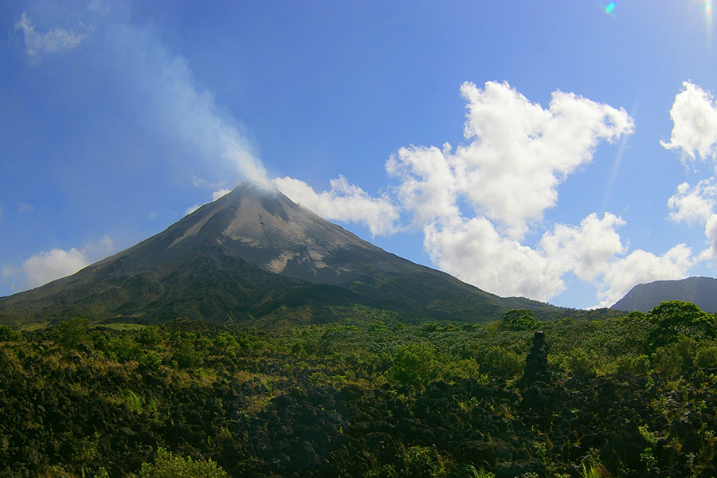

Grupos de Whatsapp e política

"Laços foram desfeitos", "as coisas nunca serão como antes", "não tocamos mais no assunto". Variações dessas falas, que mostram resignação com a divisão política no Brasil e algum alívio com o fim dos barracos, estão em quatro histórias sobre grupos de WhatsApp quatro anos após a eleição de 2018.
Ecoturismo com vista para vulcão
Pura vida. É com essa expressão que somos recebidos na Costa Rica, especialmente na área de La Fortuna, nos arredores do Vulcão Arenal. A repetição aos montes da expressão costarriquenha nos faz perceber que ela não é somente um arranjo de palavras: é um estado de espírito.
Previsão para semana é de chuva

Após uma semana com baixas temperaturas, o clima dos próximos dias será ameno na região de Sorocaba. Além disso, a dica para quem for sair de casa é levar um guarda-chuva na bolsa, porque a previsão do Instituto Nacional de Meteorologia (Inmet) indica que pode vir temporal por aí. Já os índices da umidade relativa do ar variam entre mediano e alto.